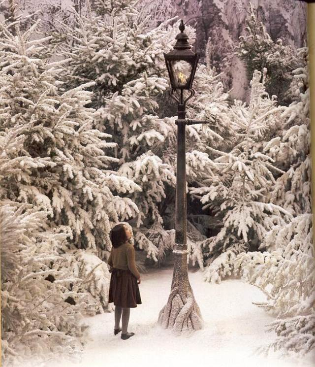
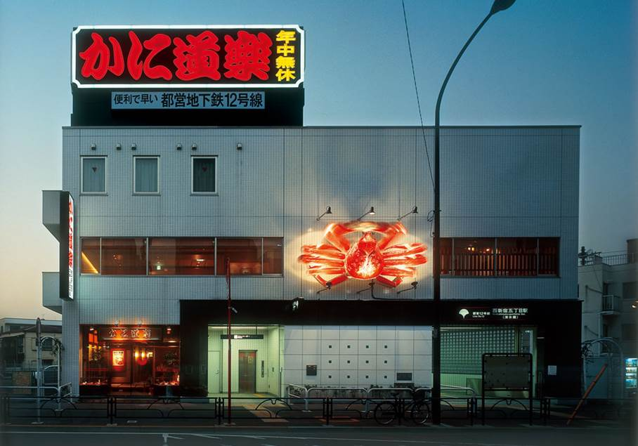

目录
1. 出典：
Ø 路灯柱
Ø 蟹道乐
2. 剧情：
1. 出典：
路灯柱，出自《纳尼亚传奇》。路灯柱位于纳尼亚西北方的灯野内，《魔法师的外甥》里，这个路灯柱起源于纳尼亚创世的第一天，当时白女巫丢弃了她从伦敦路灯柱扯下来的一根铁杆，阿斯兰透过歌声创造了纳尼亚的生物，铁杆在歌声影响下迅速长成为路灯柱，它在完全缺乏燃料的情况下可继续燃烧照明。《狮子·女巫·魔衣橱》里，刚从魔衣橱进入纳尼亚的露西在路灯柱下遇见了人羊吐纳思先生。
电影《纳尼亚传奇：狮子·女巫·魔衣橱》里，路灯柱的底部像树一样，有铁制的根，这代表了它是生长出来的。

Figure 1. 纳尼亚传奇剧照
蟹道乐（日语：かに道楽）是一家日本连锁式餐厅，属于蟹料理专门店，主要供应与蟹有关的菜式，于关东、关西、滨松、中国地方、四国等地设有分店；通常设有大型蟹模型广告招牌吸引顾客。
蟹道乐主要运营公司为“JRI株式会社かに道楽”，其总店位于大阪府大阪市中央区西心斋桥2-9-16(道顿堀)，1962年开店。1990年，集团易名JRI(Joy Road Inc.)。蟹道乐的特色为以各种不同烹调方法处理蟹类，其装修则采传统和式风格。
该餐厅在新宿有3家分店，而游戏中指的应该是离刈谷餐厅所在的7丁目较近的5丁目店。

Figure 2. 蟹道乐5丁目餐厅
结束工作的刈谷看到了独角兽，并进入到了庭院。作为一个现实主义者，刈谷首先检查了自己身体无恙，然后得出了不是自己坏掉，就是世界坏掉了的结论。随后，刈谷遇到了罗宾，想去打个招呼，但是被长相凶暴的维尼熊吓住。